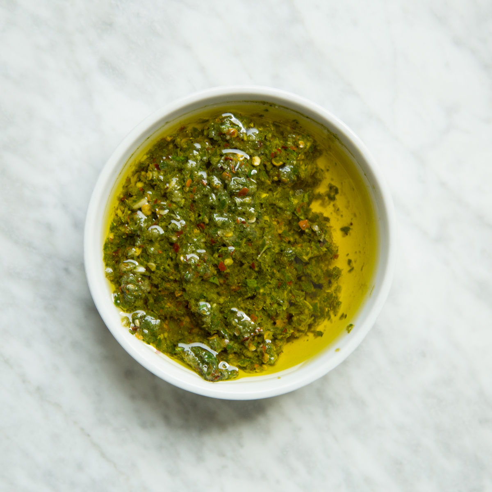

Argentinian Chimichurri

Description
Traditional chimichurri dish that comes together quickly in the food processor and taste great on all types of meat. This sauce is from Argentina and has great depth of flavor. Try putting some on anything grilled!
Ingredients
- 1/4 cup coarsly chopped parsley
- 3 tablespoons red wine vinegar
- 4 large garlic cloves, minced
- 2 tablespoons oregano leaves
- 2 teaspoons crushed red pepper
- Kosher salt and freshly ground pepper
- 1/2 cup extra-virgin olive oil
Directions
- In food processor, combine parsley, vinegar, garlic, oregano, and crushed red pepper
- Process until smooth
- Season with salt and pepper
- Transfer to a bowl and pour olive oil into mixture
- Let stand for at least 20 minutes